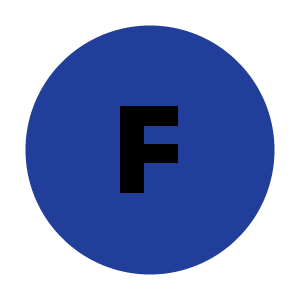
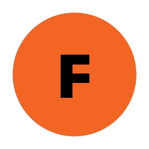

<!DOCTYPE html>
<html>
  <head>
    <title>My experiment</title>
    <script src="jspsych-6.1.0/jspsych.js"></script>
    <script src="jspsych-6.1.0/plugins/jspsych-html-keyboard-response.js"></script>
    <script src="jspsych-6.1.0/plugins/jspsych-image-keyboard-response.js"></script>
    <link rel="stylesheet" href="jspsych-6.1.0/css/jspsych.css">
  </head>
  <body></body>
  <script>
    var timeline = [];

    // Welcome
    timeline.push({
      type: "html-keyboard-response",
      stimulus: "Welcome to the experiment. Press any key to begin."
    });

    // Instructions
    timeline.push({
      type: "html-keyboard-response",
      stimulus: `
        <p>In this experiment, you will see circles in the center of the screen.</p>
        <p>If the circle <strong>contains the letter F</strong>, press F as quickly as you can.</p>
        <p>If the circle <strong>contains the letter J</strong>, press J as quickly as you can.</p>
        <p><em>Ignore the color of the circles.</em></p>
        <div style='width:700px'>
          <div style='float:left'><p><strong>Press F</strong></p></div>
          <div style='float:right'><p><strong>Press F</strong></p></div>
        </div>
        <p>Press any key to start.</p>
      `,
      post_trial_gap: 2000
    });

    // Helper: Make block
    function makeBlock(stimuli, blockLabel) {
      var fixation = {
        type: 'html-keyboard-response',
        stimulus: '<div style="font-size:60px;">+</div>',
        choices: jsPsych.NO_KEYS,
        trial_duration: function(){
          return jsPsych.randomization.sampleWithoutReplacement(
            [250, 500, 750, 1000, 1250, 1500, 1750, 2000], 1
          )[0];
        },
        data: { test_part: 'fixation', block: blockLabel }
      };

      var test = {
        type: "image-keyboard-response",
        stimulus: jsPsych.timelineVariable('stimulus'),
        choices: ['f', 'j'],
        data: jsPsych.timelineVariable('data'),
        on_finish: function(data){
          data.block = blockLabel;
          data.correct = data.key_press === jsPsych.pluginAPI.convertKeyCharacterToKeyCode(data.correct_response);
        }
      };

      return {
        timeline: [fixation, test],
        timeline_variables: stimuli,
        repetitions: 8,
        randomize_order: true
      };
    }

    // Helper: Block-specific debrief
    function makeDebrief(blockLabel) {
      return {
        type: "html-keyboard-response",
        stimulus: function() {
          var trials = jsPsych.data.get().filter({test_part: 'test', block: blockLabel});
          var correct_trials = trials.filter({correct: true});
          var accuracy = Math.round(correct_trials.count() / trials.count() * 100);
          var rt = Math.round(correct_trials.select('rt').mean());
          return `<p>Block ${blockLabel} complete.</p>
                  <p>Accuracy: ${accuracy}%</p>
                  <p>Average RT: ${rt} ms</p>
                  <p>Press any key to continue to the next block.</p>`;
        }
      };
    }

    // --- Block 1 ---
    timeline.push(makeBlock([
      { stimulus: "img/F_blue.png", data: { test_part: 'test', correct_response: 'f' } },
      { stimulus: "img/J_orange.png", data: { test_part: 'test', correct_response: 'j' } }
    ], "1"));
    timeline.push(makeDebrief("1"));

    // --- Block 2 ---
    timeline.push(makeBlock([
      { stimulus: "img/F_blue.png", data: { test_part: 'test', correct_response: 'f' } },
      { stimulus: "img/J_orange.png", data: { test_part: 'test', correct_response: 'j' } }
    ], "2"));
    timeline.push(makeDebrief("2"));

    // --- Block 3 ---
    timeline.push(makeBlock([
      { stimulus: "img/F_orange.png", data: { test_part: 'test', correct_response: 'f' } },
      { stimulus: "img/J_blue.png", data: { test_part: 'test', correct_response: 'j' } }
    ], "3"));
    timeline.push(makeDebrief("3"));

    // Final Debrief
    timeline.push({
      type: "html-keyboard-response",
      stimulus: function() {
        var html = "<h3>Final Results</h3>";
        var total_trials = jsPsych.data.get().filter({test_part: 'test'});
        var total_correct = total_trials.filter({correct: true});
        var total_accuracy = Math.round(total_correct.count() / total_trials.count() * 100);
        var total_rt = Math.round(total_correct.select('rt').mean());

        // Per-block stats
        for (var b = 1; b <= 3; b++) {
          var trials = total_trials.filter({block: b.toString()});
          var correct_trials = trials.filter({correct: true});
          var accuracy = Math.round(correct_trials.count() / trials.count() * 100);
          var rt = Math.round(correct_trials.select('rt').mean());
          html += `<p>Block ${b} — Accuracy: ${accuracy}%, Avg RT: ${rt} ms</p>`;
        }

        // Overall
        html += `<p><strong>Overall Accuracy:</strong> ${total_accuracy}%</p>`;
        html += `<p><strong>Overall Avg RT:</strong> ${total_rt} ms</p>`;
        html += "<p>Press any key to finish.</p>";
        return html;
      }
    });

jsPsych.init({
  timeline: timeline
});
  </script>
</html>
